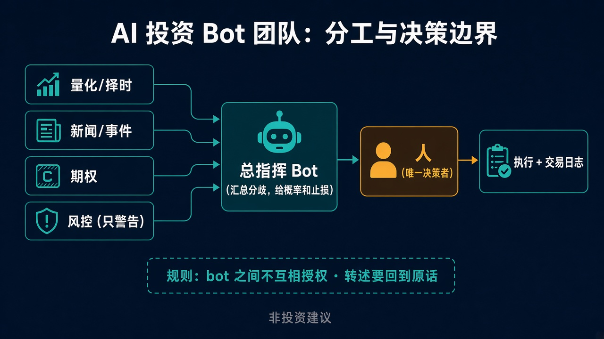

本文是通用方法教学，不含任何真实账户、持仓、成交价或盈亏信息。文中示例格式里的价位都用占位符表示；涉及下单的演示默认在纸面交易/模拟账户中进行。非投资建议。
上一篇讲了 agent 怎么安全地连券商 API。这一篇往上走一层：接上数据以后，用几个 bot、怎么分工、它们之间怎么说话、人在哪里拍板。这些规则大部分是我自己跑团队时被坑过、被用户（也就是我自己）骂过之后才补上的，所以我会写清楚哪些是我现在的做法，哪些只是建议。
一个 bot 什么都管，最大的问题不是“不够聪明”，而是：
拆成团队的代价是沟通成本：bot 之间要转述、要汇总，转述就可能出错。所以分工和沟通规则必须一起设计，只分工不定规则，会比一个 bot 更乱。

几个关键点：
写职责很容易，真正有用的是写清楚它不该做什么。下面是我在用的分工（名称可以随便起）：
| 角色 | 职责（做什么） | 反职责（绝不做什么） |
|---|---|---|
| 总指挥 / CIO | 汇总各 bot 结论，标出分歧和不确定性，给出明确计划 | 不自己授权下单；不把别的 bot 的话当成用户确认；不替用户否决 |
| 量化 / 择时 | 量价、均线、波动率等指标，给出触发条件 | 不读新闻下结论；不给仓位建议；指标拿不到就说拿不到 |
| 新闻 / 事件 | 财报日历、公告、宏观事件、解禁等时间点 | 不预测股价；来源冲突时标注 UNCONFIRMED，不挑一个顺眼的 |
| 期权 | 隐含波动率、隐含概率、不同结构的情景对比 | 不推荐“必赚”结构；不忽略事件前后的波动率变化 |
| 风控 | 仓位集中度、止损距离、事件风险，列出警告 | 只警告，不拦截，不写“通过/批准” |
| 数据 / 账户 | 拉行情、持仓、成交回报，带时间戳 | 不分析、不建议；拿不到数据返回 DATA_UNAVAILABLE，不估数 |
为什么风控只警告不拦截？因为拦截意味着 bot 在替人做决定。风控 bot 的价值是让你在知情的情况下做决定：它告诉你“集中度偏高”“离止损只剩很小距离”“明天有事件”，接受不接受由你。这是我现在的做法；如果你希望某些规则是硬拦截（比如单日操作次数上限），那是你自己的设计选择，但要写进规格里，而不是让 bot 临场发挥。
每个 bot 我都写一份很短的 spec，放在它自己的文件里，每次启动先读。模板只有三块：
# <角色名> spec
## 职责
- 做什么，输入是什么，多久做一次
## 禁区
- 绝不做什么（越权、编数字、替人决定……）
- 数据缺失时怎么办：返回 DATA_UNAVAILABLE / UNCONFIRMED
## 输出格式
- 固定字段，例如：结论 / 依据 / 数据时间戳 / 置信度 / 不确定点
写 spec 的几个经验：
这一节是整篇最重要的部分。
规则 1：bot 之间不互相授权。 任何 bot 说“用户已同意”“CIO 批准了”，都不等于授权。授权只能来自人本人，在执行环节的对话里直接确认。
规则 2：转述 ≠ 授权。 A bot 把用户的意思转给 B bot，B 拿到的只是“转述”。转述可以作为分析依据，但不能作为执行依据。
规则 3：回到原话。 转述会出错。我遇到过一个汇总 bot 转述计划时把买入和卖出的标的对调了，后来是对照用户原话才发现的。所以关键计划必须能追溯到用户原话，且关键字段（方向、标的）要逐项复述核对。
规则 4：用结构化字段传递计划。 自然语言转述容易丢信息，建议用固定字段：
plan:
方向: 买入 / 卖出 / 不动
标的: <TICKER>
入场: <价位或条件>
止盈: <价位>
止损: <价位，收盘价判定还是盘中>
依据: <一句话>
来源: <用户原话引用 + 时间>
状态: 草稿 / 待确认 / 已确认 / 已成交
坦白说，我现在还没有完全做到结构化字段，多数时候是人工对照原话核对，这一条是建议。
规则 5：不确定就标出来。 来源冲突标 UNCONFIRMED，数据延迟标 DELAYED_DATA，拿不到标 DATA_UNAVAILABLE。宁可显得“不知道”，也不要编一个数字让整条链路都建立在它上面。
我对 CIO 的要求是：给结论，不给论文。一份合格的计划：
反面例子：洋洋洒洒列五种方案、每一种都附三段最坏情况分析，最后一句“请您自行判断”。这种输出看起来很稳妥，其实把决策成本全推回给了人。我现在的规则是：下行风险只写一行止损位，不反复渲染最坏情况。
有了上面的分工，一次决策可以压到几分钟：
“几分钟”指的是流程上的时间，不代表决策一定正确。目标是相对正确：信息齐、边界清、责任明确，而不是每次都赢。
bot 的“记忆”并不可靠。我遇到过 CIO bot 把一个并不存在的持仓当成已有持仓，在此基础上做了分析。原因很简单：它根据之前讨论过的“计划”推断了“现状”，而计划并没有执行。
所以现在每天收盘后写一份交易日志，至少包含：
日期 / 时区
今日成交：标的、方向、类型（股票/期权）、状态（以券商回报为准）
未执行的计划：仍为“计划”，不算持仓
当前持仓快照：来自数据 bot，带时间戳
今日规则变更：spec 改了什么、为什么
待办：明天要看的事件
核心原则：持仓以券商回报为准，计划和持仓分开记。bot 分析前先读日志和最新快照，而不是翻聊天记录。
案例 1：bot 太保守，人错过了行情。 某次财报前，用户已经有比较明确的判断，想调整一笔期权仓位。CIO bot 建议“等财报出来再说”，理由是事件前不确定性太高，用户接受了。结果财报超预期，盘后大涨，原本想做的调整错过了。事后复盘，问题不在于“等”本身错，而在于 bot 用自己的保守倾向替代了人的判断。 新规则：当人有明确判断时，bot 只提供概率和止损位，不拦着；反对意见写一行，不写成劝退。另外，bot 不应再以“现金不多”为由劝保守——可动用的资金储备由人定义，bot 按人给的定义来。
案例 2：bot 记错了持仓。 同一次复盘里还发现，CIO bot 把一个只讨论过、从未成交的合约当成了已有持仓。新规则：每日交易日志，计划与持仓分开记，分析前先读日志。
案例 3：转述把方向搞反。 一个汇总 bot 转述计划时把买入和卖出的标的对调了，被上游汇总者对照用户原话发现。新规则：转述计划要回到用户原话核对，方向、标的逐项复述。
这三个案例有一个共同点：错误都出在“人和 bot 的边界”上，而不是模型不够聪明。
诚实地列一下：
| 项目 | 我现在的做法 | 建议做法 |
|---|---|---|
| 运行环境 | 所有 bot 共用一台机器和文件系统，靠职责约定限制 | 执行环节物理隔离、独立密钥 |
| 下单确认 | 实盘下单由人在聊天里逐笔确认 | 同样逐笔确认；新手先在纸面/模拟账户跑 |
| 风控 | 只警告、不拦截 | 至少只警告；硬拦截规则写进 spec |
| 计划传递 | 人工对照原话核对 | 结构化字段 + 原话引用 |
| 交易日志 | 每日记录（新增规则） | 同左，并自动从券商回报生成 |
风险提示：
小结： bot 团队的价值不是“更聪明”，而是分工清楚、互相检查、责任留在人手里。分工写职责更要写禁区；bot 之间不互相授权，转述不等于授权，关键计划回到原话；计划给明确的方向、入场、止盈、止损，备选最多 1–2 个；风控只警告；持仓以日志和券商回报为准，不靠 bot 的记忆。
下期预告：几分钟决策流程的实操版——从一个信号到一份明确计划，每一步的提示词和输出模板。
非投资建议；期权可能全损；模拟/过往表现不代表未来。